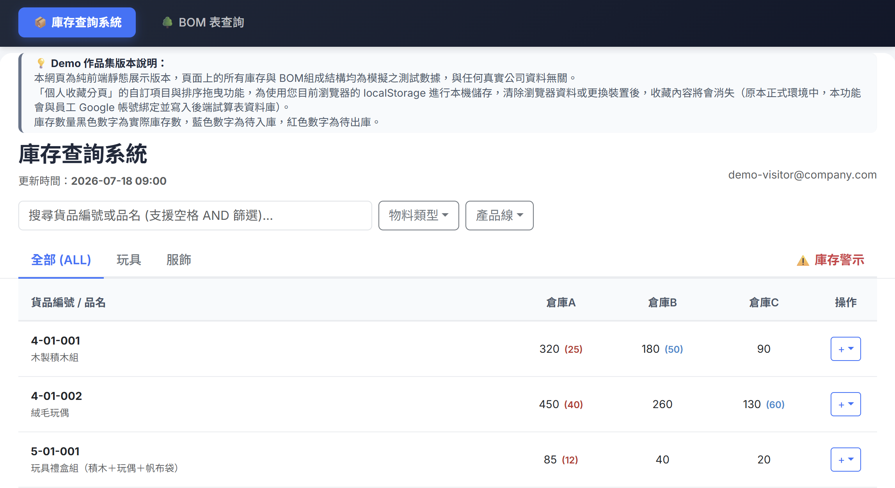
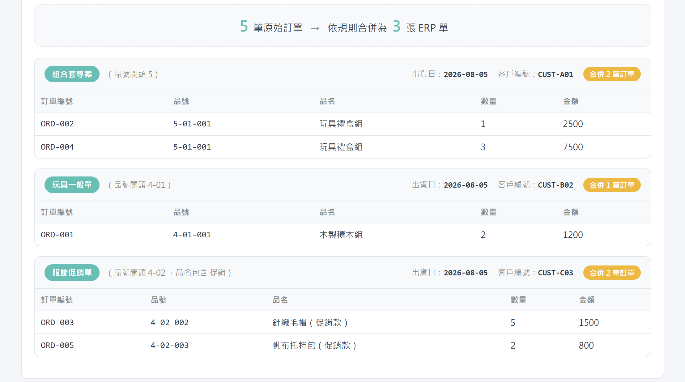

車況之眼 — 智慧巡檢系統
車輛租借前後拍照沒有標準，使用者常拍歪、拍糊，甚至沒拍到車也能上傳成功，後台只能靠人力一張張看，異常也很難第一時間抓出來。我設計了「AI 引導拍攝」流程：整合 YOLOv8n 物件偵測模型即時判斷拍攝角度、距離與車牌位置，畫面上會即時疊出引導框，提示水平有沒有歪、距離夠不夠、畫面清不清楚，使用者照著對準就能拍出可用的照片。另外針對車牌在傾斜角度下辨識失準的問題，訓練自訂車牌字元辨識模型，取代原本失效的 OCR 方案。此專案於課程成果展獲得廠商最佳中意獎。
生物科技背景 ✕ AI 應用規劃 ✕ 數據分析 ✕ 機器學習
生物科學背景出身，有四年橫跨 ERP／BOM、庫存生管、採購與品管測試的實務經驗；與累積4年生技ISO與GMP研發、製程經歷。做事習慣從流程與例外狀況思考，重視細節與資料的正確性。在工作中為了解決重複又容易出錯的打單與庫存作業，開始自學以 AI 輔助開發自動化工具，也因此投入資料分析與 AI 應用領域。面對陌生的技術與工具，習慣主動摸索、遇到卡點就拆開來弄懂，並以務實、誠實的態度看待自己的能力與產出。
專題研究「台灣刺柏族群的族群遺傳分析」，獲系上專題比賽佳作
400+ 小時，涵蓋 Python 程式設計、資料分析與視覺化（Pandas／Matplotlib／Tableau）、機器學習統計基礎、關聯式資料庫與 SQL、Git 版本控制、AI 模型雲端部署與物件偵測應用、Kaggle 深度學習實戰、資料探勘（PCA／集群分析）、AI 資安威脅與防護
Python 基礎語法、自訂函數與類別、檔案存取、模組與套件安裝、演算法題型演練，並介紹 AI 輔助開發（Vibe Coding）實務
證書字號：A-J22-0705-2026
證書字號：A-J11-6438-2026
Python、SQL
Playwright（網頁自動化 / RPA）、Google Apps Script
以 AI 協助開發（AI-assisted development）完成前端網頁與自動化工具，負責需求定義、流程設計與反覆測試至穩定可用
機器學習基礎、資料前處理、YOLOv8 物件偵測（訓練與模型轉換）、TensorFlow.js（瀏覽器端模型推論）
ERP（鼎新 TIPTOP、Smart ERP、FlexSystem）、BOM 物料清單建置與維護
IQC／IPQC／FQC 品管檢驗、ISO 13485、GMP、產品功能／穩定性／再現性測試
Git／GitHub、Excel
車輛租借前後拍照沒有標準，使用者常拍歪、拍糊，甚至沒拍到車也能上傳成功，後台只能靠人力一張張看，異常也很難第一時間抓出來。我設計了「AI 引導拍攝」流程：整合 YOLOv8n 物件偵測模型即時判斷拍攝角度、距離與車牌位置，畫面上會即時疊出引導框，提示水平有沒有歪、距離夠不夠、畫面清不清楚，使用者照著對準就能拍出可用的照片。另外針對車牌在傾斜角度下辨識失準的問題，訓練自訂車牌字元辨識模型，取代原本失效的 OCR 方案。此專案於課程成果展獲得廠商最佳中意獎。

前公司的 ERP 只能 5 個帳號同時登入，查詢介面也不好操作，但生管、採購、業務每天都要查庫存和 BOM 結構。我設計了一套自動化流程：後端以 RPA 定期登入 ERP 匯出庫存報表並寫入 Google Sheets，前端則整合庫存查詢與 BOM 樹狀展開功能，讓所有人都能即時查詢。本 Demo 為該系統的公開展示版本，以模擬資料呈現庫存跨倉查詢、安全庫存警示、BOM 組成結構展開等核心功能。
查看 Demo →
原公司需要把多通路的訂單依產品、檔期、合作案等規則手動分類，合併後再登打到 ERP，作業重複又容易出錯。我設計了一套規則引擎，依品號與品名關鍵字自動判斷訂單所屬規則，並將同規則、同出貨日的訂單自動合併為單一 ERP 銷售單，同時保留人工確認關卡（Human-in-the-loop）避免自動化誤判。本 Demo 為該規則引擎的簡化公開版本，可即時編輯訂單並觀察分類與合併結果。
查看 Demo →生物科技研發人員｜台北市大安區
生產技術／製程工程師｜新竹縣湖口鄉
OP／旅行社人員｜台北市中山區
醫療器材研發工程師｜新北市五股區
我畢業於國立中山大學生物科學系，我的職涯從醫療器材和生技產業開始。在泰博科技參與血糖試片的研發、測試與量產，累積了完整的產品驗證與品管（IPQC／FQC）經驗；在聯合生物製藥的 GMP 環境中，負責蛋白質藥物製程並帶領團隊完成連續批次生產，培養了嚴謹的流程與品質意識。這些經驗養成了我的工作習慣：任何流程都要能標準化、可追溯，而且事先想好例外狀況怎麼處理。
在億觀生物科技擔任產品工程師期間，我的工作橫跨電商營運、採購、倉儲、生管與品管，每天都有大量重複又容易出錯的 ERP 打單和庫存整理要處理。為了解決這些麻煩，我開始試著用 AI 輔助開發，自己定義需求、設計流程，再反覆測試修改到穩定可用，最後做出兩套工具：ERP 訂單自動打單（原本 1 小時的人工流程縮短到 3 分鐘）和庫存自動化匯出（原本只有 5 人能查，改成全員都能透過網頁即時查詢）。這是我第一次用程式解決真實問題，也讓我對自動化與資料處理產生濃厚興趣。
我在還在職的時候就先去上了 Python 基礎課程，確認自己真的有興趣，才決定正式轉職，報名艾鍗學院的數據分析暨機器學習應用班做系統性的學習。期末專題「車況之眼-智慧巡檢系統」中，我負責前端的開發與物件偵測模型訓練，設計 AI 引導拍攝流程，解決拍攝角度不一、沒拍到車輛也能過關的痛點，該作品於成果展獲得廠商最佳中意獎。同一段期間我也自主準備，考取了 IPAS AI 應用規劃師初級與中級（機器學習）證照。
雖然我的背景不是資工本科，但我累積了非常豐富的實務應用與工作經歷：真實的企業系統（ERP／BOM）操作經驗、跨部門協作與流程設計能力，以及品管測試的嚴謹訓練。加上現在具備的程式與資料處理能力，我有信心能快速理解實務上的問題，並且真的把它解決掉，為團隊帶來務實的貢獻。